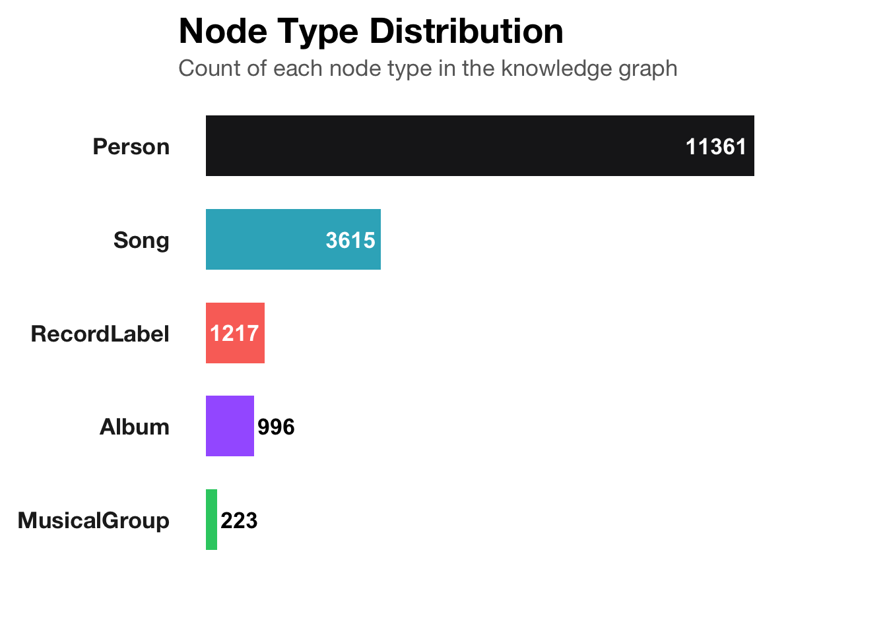
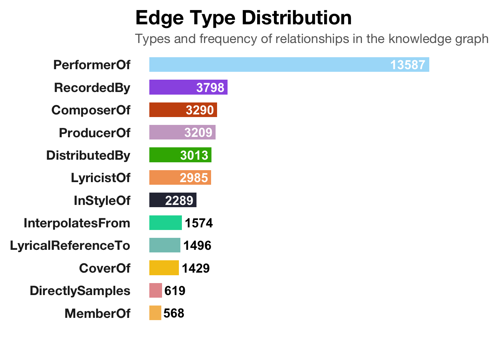
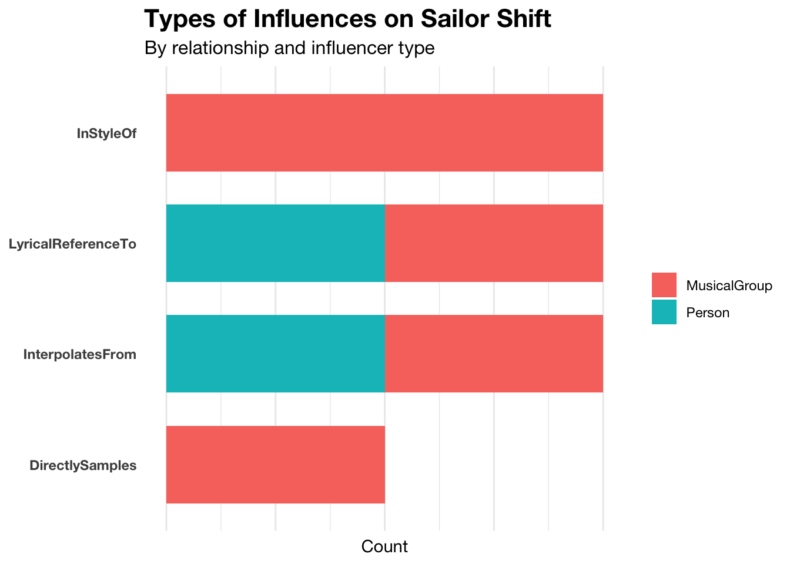

The dataset provided is a directed multigraph in JSON format. It contains information about people in the music industry, songs, albums, record labels, and the relationships between them such as performances, collaborations, and influences.
Code
# Read graph datagraph_data <-fromJSON("data/MC1_graph.json")# Extract clean nodes and edgesnodes_tbl <- graph_data$nodes %>%distinct(id, .keep_all =TRUE)edges_tbl <- graph_data$links# Recreate id-to-row-index mappingid_map <-tibble(id = nodes_tbl$id, index =seq_len(nrow(nodes_tbl)))# Rebuild edges_tbl to include row indices as from / toedges_tbl <- graph_data$links %>%left_join(id_map, by =c("source"="id")) %>%rename(from = index) %>%left_join(id_map, by =c("target"="id")) %>%rename(to = index) %>%filter(!is.na(from), !is.na(to))# Build base tidygraphg <-tbl_graph(nodes = nodes_tbl, edges = edges_tbl, directed = graph_data$directed)
🔍 1.1 Exploratory Data Analysis (EDA): Graph Overview
Code
# Total number of nodes and edgestotal_nodes <-nrow(nodes_tbl)total_edges <-nrow(edges_tbl)# Unique node typesnode_types <- nodes_tbl %>%count(`Node Type`, sort =TRUE)# Unique edge typesedge_types <- edges_tbl %>%count(`Edge Type`, sort =TRUE)list(Total_Nodes = total_nodes,Total_Edges = total_edges,Node_Types = node_types,Edge_Types = edge_types)
$Total_Nodes
[1] 17412
$Total_Edges
[1] 37857
$Node_Types
Node Type n
1 Person 11361
2 Song 3615
3 RecordLabel 1217
4 Album 996
5 MusicalGroup 223
$Edge_Types
Edge Type n
1 PerformerOf 13587
2 RecordedBy 3798
3 ComposerOf 3290
4 ProducerOf 3209
5 DistributedBy 3013
6 LyricistOf 2985
7 InStyleOf 2289
8 InterpolatesFrom 1574
9 LyricalReferenceTo 1496
10 CoverOf 1429
11 DirectlySamples 619
12 MemberOf 568
🧩 Node Types Description
Based on the data dictionary and actual values in the JSON file, we can classify the following node types:
Node Type
Description
Person
Any individual contributor, including singers, lyricists, composers, etc.
MusicalGroup
Groups formed by multiple individuals, e.g., bands or choirs
Song
Individual song tracks with attributes like release date, genre, etc.
Album
Grouped collections of songs, with their own release and popularity markers
RecordLabel
Organizations involved in production, recording, or distribution
We can also check their frequency in the dataset:
Code
# Custom palette inspired by genre stylesgenre_palette <-c("#A566FF", # Person (lavender)"#2ECC71", # Song (green)"#1C1C1E", # RecordLabel (black)"#FA7268", # Album (salmon)"#34B1C4"# MusicalGroup (aqua))node_types <- node_types %>%mutate(text_color =ifelse(n >1000, "white", "black"),text_hjust =ifelse(n >1000, 1.1, -0.1))ggplot(node_types, aes(x =reorder(`Node Type`, n), y = n, fill =`Node Type`)) +geom_col(width =0.65, show.legend =FALSE) +geom_text(aes(label = n, hjust = text_hjust, color = text_color), size =4.5, fontface ="bold") +coord_flip(clip ="off") +scale_fill_manual(values = genre_palette) +scale_color_identity() +labs(title ="<b style='font-size:20pt;'>Node Type Distribution</b>",subtitle ="<span style='color:#666666;'>Count of each node type in the knowledge graph</span>",x =NULL,y =NULL ) +theme_minimal(base_family ="Helvetica Neue") +theme(panel.grid =element_blank(),axis.text.y =element_text(face ="bold", size =13, color ="#222222"),axis.text.x =element_blank(),axis.ticks =element_blank(),plot.title =element_markdown(size =20, face ="bold", hjust =0),plot.subtitle =element_markdown(size =13, hjust =0),plot.margin =margin(10, 60, 30, 10) )

🔗 Edge Types Reference Table
Below is the detailed explanation of all possible Edge Types in the knowledge graph, which describe different types of relationships between entities (nodes).
🎵 Creative and Collaboration Relationships
Edge Type
Meaning
PerformerOf
A (person/group) performed B (song/album)
ComposerOf
A is the composer of B
LyricistOf
A is the lyricist of B
ProducerOf
A is the producer of B
🏢 Company Relationships
Edge Type
Meaning
RecordedBy
A (work) was recorded by B (record label)
DistributedBy
A (work) was distributed by B (record label)
🎨 Style and Influence Relationships
Edge Type
Meaning
InStyleOf
A mimics the style of B
CoverOf
A is a cover version of B
InterpolatesFrom
A interpolates melody from B
LyricalReferenceTo
A makes a lyrical reference to B
DirectlySamples
A directly samples audio from B
👥 Membership Relationships
Edge Type
Meaning
MemberOf
A is a member of B (a music group or collective)
Their distribution is plotted below:
Code
edge_palette <-c("#CA5310", "#F5C518", "#E5989B", "#38B000", "#2D3142", "#06D6A0", "#83C5BE","#F4A261", "#F6BD60", "#A9DEF9", "#CBAACB", "#9B5DE5")edge_types <- edge_types %>%mutate(text_color =ifelse(n >2000, "white", "black"),text_hjust =ifelse(n >2000, 1.1, -0.1))ggplot(edge_types, aes(x =reorder(`Edge Type`, n), y = n, fill =`Edge Type`)) +geom_col(width =0.65, show.legend =FALSE) +geom_text(aes(label = n, hjust = text_hjust, color = text_color), size =4.5, fontface ="bold") +coord_flip(clip ="off") +scale_fill_manual(values = edge_palette) +scale_color_identity() +labs(title ="<b style='font-size:20pt;'>Edge Type Distribution</b>",subtitle ="<span style='color:#666666;'>Types and frequency of relationships in the knowledge graph</span>",x =NULL,y =NULL ) +theme_minimal(base_family ="Helvetica Neue") +theme(panel.grid =element_blank(),axis.text.y =element_text(face ="bold", size =13, color ="#222222"),axis.text.x =element_blank(),axis.ticks =element_blank(),plot.title =element_markdown(size =20, face ="bold", hjust =0),plot.subtitle =element_markdown(size =13, hjust =0),plot.margin =margin(10, 60, 30, 10) )

These insights provide a foundation to interpret future patterns in artist collaboration, influence, and success prediction.
This section extracts and visualizes the full connected subgraph centered on Sailor Shift, showcasing all directly and indirectly connected entities in the knowledge graph.
🌭️ Step 1: Extract All Connected Nodes
Code
# Get Sailor Shift's node idsailor_id <- nodes_tbl %>%filter(name =="Sailor Shift") %>%pull(id)# Convert tidygraph to igraph for component extractionig <-as.igraph(g)# Identify the connected component that includes Sailor Shiftcomponent_id <- igraph::components(ig)$membership[which(V(ig)$id == sailor_id)]connected_ids <-V(ig)[igraph::components(ig)$membership == component_id]$name
🌍 Step 2: Visualize Static Subgraph with Interactive 3-Hop Network
This full subgraph gives a comprehensive view of Sailor Shift’s artistic ecosystem, while the interactive 3-hop version allows users to explore relationships with greater clarity and responsiveness.
🔍 Insight: Sailor Shift’s Influence Ecosystem The Ego Network of Sailor Shift reveals a highly connected artistic ecosystem spanning songs, albums, musical groups, and record labels. Her position at the center of a dense subgraph highlights her role as a key figure in the Oceanus Folk community. The variety of edges (e.g., InterpolatesFrom, PerformerOf, MemberOf) suggests not only her creative versatility but also her multi-layered influence network—including direct artistic collaborations and indirect stylistic references.
Notably:
She interacts with all five node types (Person, Song, Album, MusicalGroup, RecordLabel),
Her connections include both creative influence (via stylistic or lyrical references) and professional affiliations (production, distribution, membership).
This network serves as a powerful visual entry point for investigating how and by whom Sailor Shift has been influenced, who she in turn has influenced, and what her broader role is within the Oceanus Folk genre.
🚀 Moving Forward: Task-based Subgraph Exploration With this foundation, we will now delve deeper into three core analytical tasks, each focused on a unique aspect of Sailor Shift’s artistic identity and influence. Each task will be accompanied by an interactive or static visualization powered by the knowledge graph.
✅ Task 1 – Who Has Influenced Sailor Shift?
🎯 Objective:
Use the knowledge graph to identify who has influenced Sailor Shift over time, by analyzing stylistic, lyrical, or sampling relationships represented in the graph. These insights will reveal patterns in her creative development.
🔍 Why This Approach?
Sailor Shift’s musical evolution is shaped by direct and indirect artistic influences. In a knowledge graph, influence is captured by specific edge types:
🎨 Style and Influence Relationships
Edge Type
Meaning
InStyleOf
A mimics the style of B
CoverOf
A is a cover version of B
InterpolatesFrom
A interpolates melody from B
LyricalReferenceTo
A makes a lyrical reference to B
DirectlySamples
A directly samples audio from B
These edge types describe different ways an artist or work may influence Sailor Shift. By filtering the graph for these edge types where Sailor Shift is the target, we construct a reliable picture of who influenced her and how.
By filtering the graph for these edge types targeting Sailor Shift, we can construct a reliable view of her artistic lineage.
influencer_edges %>%count(`Edge Type`, influencer_type) %>%ggplot(aes(x =reorder(`Edge Type`, n), y = n, fill = influencer_type)) +geom_col(width =0.7) +coord_flip() +labs(title ="Types of Influences on Sailor Shift",subtitle ="By relationship and influencer type",x =NULL,y ="Count" ) +theme_minimal(base_family ="Helvetica Neue") +theme(plot.title =element_text(face ="bold", size =16),plot.subtitle =element_text(size =12),axis.text.y =element_text(face ="bold"),panel.grid.major.y =element_blank(),axis.text.x =element_blank(),legend.title =element_blank() )

🔍 Insight: Who Influenced Sailor Shift?
The bar chart reveals the distribution of influence types on Sailor Shift, broken down by the influencer’s node type (MusicalGroup or Person). Key takeaways:
MusicalGroups are dominant in all influence categories:
They account for allInStyleOf influences, suggesting that Sailor Shift’s stylistic inspirations largely stem from band-level aesthetics.
For DirectlySamples, MusicalGroup nodes are again the exclusive contributors, highlighting a tendency to sample from established group-based soundscapes.
Persons contribute notably to lyrical and melodic references:
Half of the LyricalReferenceTo and InterpolatesFrom edges are from Person nodes. This suggests a more personal or individual-driven source of lyrical and melodic inspiration, possibly tied to solo artist storytelling.
📌 Step 3: Visualize Knowledge Graph of Influencers
🔍 Step 3 Insight: Direct Artistic Influences on Sailor Shift
The static knowledge graph in Step 3 provides a clear snapshot of who directly influenced Sailor Shift, based on well-defined artistic relationships such as DirectlySamples, InterpolatesFrom, InStyleOf, and LyricalReferenceTo.
✨ Key Observations:
Diverse Influence Channels: Sailor Shift’s inspirations are not confined to a single creative channel. She samples music (DirectlySamples), borrows stylistic cues (InStyleOf), lifts lyrical fragments (LyricalReferenceTo), and interpolates melodies (InterpolatesFrom).
Balanced Influencer Types: Influences come from both individual artists and musical groups, indicating that her artistry draws from both personal voices and collective aesthetics.
Dense Inbound Edges: The graph shows multiple inbound links converging on Sailor Shift, underscoring her role as a stylistic inheritor of a tightly connected creative network.
🧠 Interpretation:
This direct influence map builds a foundation for understanding her creative identity. However, it only reflects surface-level lineage—i.e., those explicitly linked to her in the graph.
⏭️ Why We Proceed to Step 4
While Step 3 gives us a high-fidelity view of Sailor Shift’s direct inspirations, it leaves several questions unanswered:
Who are the individuals behind the musical groups?
Are there unseen intermediaries—like songs or albums—that serve as vehicles of influence?
What multi-hop chains of inspiration exist beyond what is immediately visible?
To answer these, we transition to Step 4, where we:
Traverse multi-layer influence chains (not limited to 1-hop)
Expand MusicalGroup nodes into their individual Person members (via MemberOf)
Visualize deep indirect relationships that build Sailor Shift’s identity over time
📌 Step 4: Show All Influence Types in Indirect Graph
🔍 Step 4 Insight: Full Influence Graph with Group Member Expansion
The interactive graph in Step 4 reveals the deep influence structure surrounding Sailor Shift, integrating both direct and indirect artistic relationships and group-to-individual decompositions.
🎯 Key Observations:
Musical Groups as Gateways: Many key influences (e.g., The Phantom Operators, Cassette Future) are MusicalGroups. However, their true impact on Sailor Shift is clarified only after unfolding their members. This highlights the importance of surfacing latent human contributors.
Individuals Behind the Sound:
Juno Ray, Savannah Teal, Zara Quinn, and others appear as hidden but crucial figures influencing Sailor Shift indirectly through their band affiliations.
These artists are connected through MemberOf → MusicalGroup → InfluenceType paths, showing that influence isn’t always linear or direct.
Multi-Relation Influence: Relationships such as InterpolatesFrom, InStyleOf, and LyricalReferenceTo show that Sailor Shift does not just imitate style—she blends lyrical and musical fragments from diverse sources.
Dense Centrality: Sailor Shift sits at the hub of a diverse, multi-layered network, receiving creative input from solo artists, collective groups, and intermediary compositions (albums/songs).
🧠 Interpretation:
This graph confirms that Sailor Shift is not only influenced by prominent entities but is also indirectly shaped by dozens of individuals, whose contributions are embedded within groups. Her artistic identity emerges from a blend of:
Stylized group traditions
Personal lyrical echoes
Collaborative musical lineages
It also suggests that to understand her evolution, one must look beyond direct citations and recognize the ecosystem of creators behind the visible front.
The network reveals a rich multi-hop influence chain leading into Sailor Shift’s artistry. Instead of just direct artistic references, this graph uncovers how individuals or groups shaped her through intermediary songs and albums.
🎯 Key Observations:
Several musical groups contributed via performed songs, which were later interpolated or sampled by Sailor Shift.
Albums served as indirect influence bridges, housing songs that were referenced, covered, or remixed.
Collaboration depth is highlighted—some artists influence Sailor Shift through layered paths (e.g., PerformerOf → Song → InterpolatesFrom → Sailor Shift).
This illustrates how artistic influence flows across works, not just individuals—showing Sailor Shift’s stylistic lineage as both deep and distributed.
Source Code
---title: "Take-home_Ex02"author: "Lucas Luo"date: "May 21 2025"date-modified: "last-modified"format: html: code-tools: true code-fold: true toc: true theme: luxexecute: eval: true echo: true message: false warning: false freeze: true---```{r setup, include=FALSE}pacman::p_load( tidyverse, # Core data wrangling and ggplot2 jsonlite, # Reading JSON files igraph, # Network analysis tidygraph, # Tidy-style graph manipulation ggraph, # Grammar of graphics for networks scales, # Scale customization for plots ggtext, # Markdown-rich text elements in plots lubridate, # Working with date and time visNetwork # Interactive graph visualization)```## 📁 1. Load Knowledge Graph DataThe dataset provided is a directed multigraph in JSON format. It contains information about people in the music industry, songs, albums, record labels, and the relationships between them such as performances, collaborations, and influences.```{r}# Read graph datagraph_data <-fromJSON("data/MC1_graph.json")# Extract clean nodes and edgesnodes_tbl <- graph_data$nodes %>%distinct(id, .keep_all =TRUE)edges_tbl <- graph_data$links# Recreate id-to-row-index mappingid_map <-tibble(id = nodes_tbl$id, index =seq_len(nrow(nodes_tbl)))# Rebuild edges_tbl to include row indices as from / toedges_tbl <- graph_data$links %>%left_join(id_map, by =c("source"="id")) %>%rename(from = index) %>%left_join(id_map, by =c("target"="id")) %>%rename(to = index) %>%filter(!is.na(from), !is.na(to))# Build base tidygraphg <-tbl_graph(nodes = nodes_tbl, edges = edges_tbl, directed = graph_data$directed)```## 🔍 1.1 Exploratory Data Analysis (EDA): Graph Overview```{r}# Total number of nodes and edgestotal_nodes <-nrow(nodes_tbl)total_edges <-nrow(edges_tbl)# Unique node typesnode_types <- nodes_tbl %>%count(`Node Type`, sort =TRUE)# Unique edge typesedge_types <- edges_tbl %>%count(`Edge Type`, sort =TRUE)list(Total_Nodes = total_nodes,Total_Edges = total_edges,Node_Types = node_types,Edge_Types = edge_types)```## 🧩 Node Types DescriptionBased on the data dictionary and actual values in the JSON file, we can classify the following node types:| Node Type | Description ||----------------------|-------------------------------------------------|| `Person` | Any individual contributor, including singers, lyricists, composers, etc. || `MusicalGroup` | Groups formed by multiple individuals, e.g., bands or choirs || `Song` | Individual song tracks with attributes like release date, genre, etc. || `Album` | Grouped collections of songs, with their own release and popularity markers || `RecordLabel` | Organizations involved in production, recording, or distribution |We can also check their frequency in the dataset:```{r}# Custom palette inspired by genre stylesgenre_palette <-c("#A566FF", # Person (lavender)"#2ECC71", # Song (green)"#1C1C1E", # RecordLabel (black)"#FA7268", # Album (salmon)"#34B1C4"# MusicalGroup (aqua))node_types <- node_types %>%mutate(text_color =ifelse(n >1000, "white", "black"),text_hjust =ifelse(n >1000, 1.1, -0.1))ggplot(node_types, aes(x =reorder(`Node Type`, n), y = n, fill =`Node Type`)) +geom_col(width =0.65, show.legend =FALSE) +geom_text(aes(label = n, hjust = text_hjust, color = text_color), size =4.5, fontface ="bold") +coord_flip(clip ="off") +scale_fill_manual(values = genre_palette) +scale_color_identity() +labs(title ="<b style='font-size:20pt;'>Node Type Distribution</b>",subtitle ="<span style='color:#666666;'>Count of each node type in the knowledge graph</span>",x =NULL,y =NULL ) +theme_minimal(base_family ="Helvetica Neue") +theme(panel.grid =element_blank(),axis.text.y =element_text(face ="bold", size =13, color ="#222222"),axis.text.x =element_blank(),axis.ticks =element_blank(),plot.title =element_markdown(size =20, face ="bold", hjust =0),plot.subtitle =element_markdown(size =13, hjust =0),plot.margin =margin(10, 60, 30, 10) )```## 🔗 Edge Types Reference TableBelow is the detailed explanation of all possible **Edge Types** in the knowledge graph, which describe different types of relationships between entities (nodes).### 🎵 Creative and Collaboration Relationships| Edge Type | Meaning ||---------------|-------------------------------------------|| `PerformerOf` | A (person/group) performed B (song/album) || `ComposerOf` | A is the composer of B || `LyricistOf` | A is the lyricist of B || `ProducerOf` | A is the producer of B |### 🏢 Company Relationships| Edge Type | Meaning ||-----------------|----------------------------------------------|| `RecordedBy` | A (work) was recorded by B (record label) || `DistributedBy` | A (work) was distributed by B (record label) |### 🎨 Style and Influence Relationships| Edge Type | Meaning ||----------------------|----------------------------------|| `InStyleOf` | A mimics the style of B || `CoverOf` | A is a cover version of B || `InterpolatesFrom` | A interpolates melody from B || `LyricalReferenceTo` | A makes a lyrical reference to B || `DirectlySamples` | A directly samples audio from B |### 👥 Membership Relationships| Edge Type | Meaning ||------------|--------------------------------------------------|| `MemberOf` | A is a member of B (a music group or collective) |Their distribution is plotted below:```{r}edge_palette <-c("#CA5310", "#F5C518", "#E5989B", "#38B000", "#2D3142", "#06D6A0", "#83C5BE","#F4A261", "#F6BD60", "#A9DEF9", "#CBAACB", "#9B5DE5")edge_types <- edge_types %>%mutate(text_color =ifelse(n >2000, "white", "black"),text_hjust =ifelse(n >2000, 1.1, -0.1))ggplot(edge_types, aes(x =reorder(`Edge Type`, n), y = n, fill =`Edge Type`)) +geom_col(width =0.65, show.legend =FALSE) +geom_text(aes(label = n, hjust = text_hjust, color = text_color), size =4.5, fontface ="bold") +coord_flip(clip ="off") +scale_fill_manual(values = edge_palette) +scale_color_identity() +labs(title ="<b style='font-size:20pt;'>Edge Type Distribution</b>",subtitle ="<span style='color:#666666;'>Types and frequency of relationships in the knowledge graph</span>",x =NULL,y =NULL ) +theme_minimal(base_family ="Helvetica Neue") +theme(panel.grid =element_blank(),axis.text.y =element_text(face ="bold", size =13, color ="#222222"),axis.text.x =element_blank(),axis.ticks =element_blank(),plot.title =element_markdown(size =20, face ="bold", hjust =0),plot.subtitle =element_markdown(size =13, hjust =0),plot.margin =margin(10, 60, 30, 10) )```These insights provide a foundation to interpret future patterns in artist collaboration, influence, and success prediction.## 🌍 2. Sailor Shift’s Ego Network Overview (Full Connected Subgraph)### 📌 ObjectiveThis section extracts and visualizes the **full connected subgraph** centered on *Sailor Shift*, showcasing all directly and indirectly connected entities in the knowledge graph.------------------------------------------------------------------------### 🌭️ Step 1: Extract All Connected Nodes```{r}# Get Sailor Shift's node idsailor_id <- nodes_tbl %>%filter(name =="Sailor Shift") %>%pull(id)# Convert tidygraph to igraph for component extractionig <-as.igraph(g)# Identify the connected component that includes Sailor Shiftcomponent_id <- igraph::components(ig)$membership[which(V(ig)$id == sailor_id)]connected_ids <-V(ig)[igraph::components(ig)$membership == component_id]$name```------------------------------------------------------------------------### 🌍 Step 2: Visualize Static Subgraph with Interactive 3-Hop Network```{r}# Convert to igraph and compute 3-hop neighborhoodig <-as.igraph(g)sailor_vid <-which(V(ig)$id == sailor_id)neighbor_ids <-ego(ig, order =2, nodes = sailor_vid, mode ="all")[[1]]sub3_ids <-V(ig)[neighbor_ids]$idsub3_nodes_tbl <- nodes_tbl %>%filter(id %in% sub3_ids)sub3_edges_tbl <- edges_tbl %>%filter(source %in% sub3_ids & target %in% sub3_ids)# Prepare visNetwork data# Modify vis_nodes to make "Sailor Shift" larger and boldvis_nodes <- sub3_nodes_tbl %>%mutate(size =ifelse(name =="Sailor Shift", 50, 20)) %>%# 🔍 Control node sizetransmute(id = id,label = name,group =`Node Type`,title =paste0("<b>", name, "</b><br>Type: ", `Node Type`),value = size # visNetwork uses 'value' to control node size )# vis_edges remains unchangedvis_edges <- sub3_edges_tbl %>%transmute(from = source, to = target, label =`Edge Type`, arrows ="to")# Render Interactive Graph with highlighted Sailor ShiftvisNetwork(vis_nodes, vis_edges, width ="100%", height ="700px") %>%visEdges(smooth =TRUE) %>%visOptions(highlightNearest =list(enabled =TRUE, degree =2), nodesIdSelection =TRUE) %>%visLayout(randomSeed =2025) %>%visLegend(useGroups =TRUE, main ="Node Type") %>%visPhysics(stabilization =TRUE)```------------------------------------------------------------------------This full subgraph gives a comprehensive view of Sailor Shift's artistic ecosystem, while the interactive 3-hop version allows users to explore relationships with greater clarity and responsiveness.🔍 Insight: Sailor Shift’s Influence Ecosystem The Ego Network of Sailor Shift reveals a highly connected artistic ecosystem spanning songs, albums, musical groups, and record labels. Her position at the center of a dense subgraph highlights her role as a key figure in the Oceanus Folk community. The variety of edges (e.g., InterpolatesFrom, PerformerOf, MemberOf) suggests not only her creative versatility but also her multi-layered influence network—including direct artistic collaborations and indirect stylistic references.Notably:She interacts with all five node types (Person, Song, Album, MusicalGroup, RecordLabel),Her connections include both creative influence (via stylistic or lyrical references) and professional affiliations (production, distribution, membership).This network serves as a powerful visual entry point for investigating how and by whom Sailor Shift has been influenced, who she in turn has influenced, and what her broader role is within the Oceanus Folk genre.🚀 Moving Forward: Task-based Subgraph Exploration With this foundation, we will now delve deeper into three core analytical tasks, each focused on a unique aspect of Sailor Shift’s artistic identity and influence. Each task will be accompanied by an interactive or static visualization powered by the knowledge graph.## ✅ Task 1 – Who Has Influenced Sailor Shift?### 🎯 Objective:Use the knowledge graph to identify **who has influenced Sailor Shift over time**, by analyzing stylistic, lyrical, or sampling relationships represented in the graph. These insights will reveal patterns in her creative development.------------------------------------------------------------------------### 🔍 Why This Approach?Sailor Shift’s musical evolution is shaped by direct and indirect artistic influences. In a knowledge graph, influence is captured by specific edge types:### 🎨 Style and Influence Relationships| Edge Type | Meaning ||----------------------|----------------------------------|| `InStyleOf` | A mimics the style of B || `CoverOf` | A is a cover version of B || `InterpolatesFrom` | A interpolates melody from B || `LyricalReferenceTo` | A makes a lyrical reference to B || `DirectlySamples` | A directly samples audio from B |These edge types describe different ways an artist or work may influence Sailor Shift. By filtering the graph for these edge types where **Sailor Shift is the target**, we construct a reliable picture of who influenced her and how.------------------------------------------------------------------------By filtering the graph for these edge types targeting Sailor Shift, we can construct a reliable view of her artistic lineage.------------------------------------------------------------------------### 📌 Step 1: Extract Influencer Edges```{r}influence_types <-c("InStyleOf", "CoverOf", "InterpolatesFrom", "LyricalReferenceTo", "DirectlySamples")# Get edges that influence herinfluencer_edges <- graph_data$links %>%filter(`Edge Type`%in% influence_types, target == sailor_id) %>%left_join(nodes_tbl, by =c("source"="id")) %>%rename(influencer_name = name, influencer_type =`Node Type`) %>%select(source, target, `Edge Type`, influencer_name, influencer_type)```------------------------------------------------------------------------### 📌 Step 2: Visualize Influencer Type Distribution```{r}influencer_edges %>%count(`Edge Type`, influencer_type) %>%ggplot(aes(x =reorder(`Edge Type`, n), y = n, fill = influencer_type)) +geom_col(width =0.7) +coord_flip() +labs(title ="Types of Influences on Sailor Shift",subtitle ="By relationship and influencer type",x =NULL,y ="Count" ) +theme_minimal(base_family ="Helvetica Neue") +theme(plot.title =element_text(face ="bold", size =16),plot.subtitle =element_text(size =12),axis.text.y =element_text(face ="bold"),panel.grid.major.y =element_blank(),axis.text.x =element_blank(),legend.title =element_blank() )```🔍 Insight: Who Influenced Sailor Shift?The bar chart reveals the distribution of influence types on Sailor Shift, broken down by the influencer's node type (`MusicalGroup` or `Person`). Key takeaways:- **MusicalGroups are dominant** in all influence categories: - They account for **all** `InStyleOf` influences, suggesting that Sailor Shift's stylistic inspirations largely stem from band-level aesthetics. - For `DirectlySamples`, `MusicalGroup` nodes are again the exclusive contributors, highlighting a tendency to sample from established group-based soundscapes.- **Persons contribute notably to lyrical and melodic references**: - Half of the `LyricalReferenceTo` and `InterpolatesFrom` edges are from `Person` nodes. This suggests a more personal or individual-driven source of lyrical and melodic inspiration, possibly tied to solo artist storytelling.------------------------------------------------------------------------### 📌 Step 3: Visualize Knowledge Graph of Influencers```{r}# Extract relevant nodesinfluencer_ids <- influencer_edges$sourceinfluencer_nodes <- nodes_tbl %>%filter(id %in% influencer_ids | id == sailor_id) %>%distinct(id, .keep_all =TRUE)influencer_links <- graph_data$links %>%filter(source %in% influencer_ids, target == sailor_id)# Map to row indices for subgraphid_map <-tibble(id = influencer_nodes$id, index =seq_len(nrow(influencer_nodes)))influencer_links_mapped <- influencer_links %>%left_join(id_map, by =c("source"="id")) %>%rename(from = index) %>%left_join(id_map, by =c("target"="id")) %>%rename(to = index) %>%filter(!is.na(from), !is.na(to))# Create subgraphinfluencer_graph <-tbl_graph(nodes = influencer_nodes, edges = influencer_links_mapped, directed =TRUE)# Draw the graphset.seed(2025)ggraph(influencer_graph, layout ="kk") +geom_edge_link(aes(color =`Edge Type`),arrow =arrow(length =unit(4, 'mm')),end_cap =circle(3, 'mm') ) +geom_node_point(aes(color =`Node Type`), size =5) +geom_node_text(aes(label = name), # ✅ Show all node namesrepel =TRUE,size =4,fontface =ifelse(influencer_nodes$name =="Sailor Shift", "bold", "plain") ) +labs(title ="Who Influenced Sailor Shift?",subtitle ="All nodes labeled in subgraph" ) +theme_graph(base_family ="Helvetica Neue")```### 🔍 Step 3 Insight: Direct Artistic Influences on Sailor ShiftThe static knowledge graph in Step 3 provides a clear snapshot of **who directly influenced Sailor Shift**, based on well-defined artistic relationships such as `DirectlySamples`, `InterpolatesFrom`, `InStyleOf`, and `LyricalReferenceTo`.#### ✨ Key Observations:- **Diverse Influence Channels**: Sailor Shift’s inspirations are not confined to a single creative channel. She samples music (`DirectlySamples`), borrows stylistic cues (`InStyleOf`), lifts lyrical fragments (`LyricalReferenceTo`), and interpolates melodies (`InterpolatesFrom`).- **Balanced Influencer Types**: Influences come from both **individual artists** and **musical groups**, indicating that her artistry draws from both personal voices and collective aesthetics.- **Dense Inbound Edges**: The graph shows multiple inbound links converging on Sailor Shift, underscoring her role as a stylistic inheritor of a tightly connected creative network.#### 🧠 Interpretation:This direct influence map builds a foundation for understanding her creative identity. However, it only reflects surface-level lineage—i.e., **those explicitly linked to her** in the graph.------------------------------------------------------------------------#### ⏭️ Why We Proceed to Step 4While Step 3 gives us a high-fidelity view of Sailor Shift’s direct inspirations, it leaves several questions unanswered:- **Who are the individuals behind the musical groups?**- **Are there unseen intermediaries—like songs or albums—that serve as vehicles of influence?**- **What multi-hop chains of inspiration exist beyond what is immediately visible?**To answer these, we transition to **Step 4**, where we:- Traverse **multi-layer influence chains** (not limited to 1-hop)- Expand **MusicalGroup** nodes into their individual **Person** members (via `MemberOf`)- Visualize **deep indirect relationships** that build Sailor Shift’s identity over time------------------------------------------------------------------------### 📌 Step 4: Show All Influence Types in Indirect Graph```{r}# Influence edge typesinfluence_types <-c("InStyleOf", "CoverOf", "InterpolatesFrom", "LyricalReferenceTo", "DirectlySamples")# Expand full influence paths recursively (e.g. up to 5 hops)max_depth <-5influence_paths <-tibble()current_targets <- sailor_idfor (i in1:max_depth) { next_edges <- edges_tbl %>%filter(`Edge Type`%in% influence_types, target %in% current_targets)if (nrow(next_edges) ==0) break next_edges <- next_edges %>%mutate(depth =paste0(i, "-hop")) influence_paths <-bind_rows(influence_paths, next_edges) current_targets <-unique(next_edges$source)}# Identify Musical Groups and expand their membersmusical_group_ids <- nodes_tbl %>%filter(`Node Type`=="MusicalGroup") %>%pull(id)member_edges <- edges_tbl %>%filter(`Edge Type`=="MemberOf", target %in% musical_group_ids)# If any musical group is in influence path, bring in membersgroup_ids_in_path <- influence_paths %>%filter(source %in% musical_group_ids) %>%pull(source)extra_members <- member_edges %>%filter(target %in% group_ids_in_path)# Combine all edgesfull_edges <-bind_rows( influence_paths %>%mutate(hop = depth), extra_members %>%mutate(hop ="GroupMember"))# Related node idsrelated_ids <-unique(c(full_edges$source, full_edges$target, sailor_id))vis_nodes <- nodes_tbl %>%filter(id %in% related_ids) %>%mutate(label = name,group =`Node Type`,value =ifelse(name =="Sailor Shift", 50, 20),title =paste0("<b>", name, "</b><br>Type: ", `Node Type`) ) %>%select(id, label, group, value, title)vis_edges <- full_edges %>%mutate(arrows ="to",label =`Edge Type`,color =case_when(`Edge Type`=="DirectlySamples"~"#FF6B6B",`Edge Type`=="InterpolatesFrom"~"#4D96FF",`Edge Type`=="CoverOf"~"#FFD93D",`Edge Type`=="InStyleOf"~"#6BCB77",`Edge Type`=="LyricalReferenceTo"~"#C780FA",`Edge Type`=="MemberOf"~"#BDBDBD",TRUE~"#999999" ) ) %>%select(from = source, to = target, arrows, label, color)visNetwork(vis_nodes, vis_edges, width ="100%", height ="800px") %>%visEdges(smooth =TRUE) %>%visOptions(highlightNearest =TRUE, nodesIdSelection =TRUE) %>%visLayout(randomSeed =2025) %>%visLegend(useGroups =TRUE, main ="Node Type") %>%visPhysics(stabilization =TRUE)```#### 🔍 Step 4 Insight: Full Influence Graph with Group Member ExpansionThe interactive graph in Step 4 reveals the **deep influence structure** surrounding Sailor Shift, integrating both direct and indirect artistic relationships and **group-to-individual decompositions**.#### 🎯 Key Observations:- **Musical Groups as Gateways**: Many key influences (e.g., *The Phantom Operators*, *Cassette Future*) are MusicalGroups. However, their true impact on Sailor Shift is clarified only after unfolding their members. This highlights the importance of surfacing latent human contributors.- **Individuals Behind the Sound**: - *Juno Ray*, *Savannah Teal*, *Zara Quinn*, and others appear as hidden but crucial figures influencing Sailor Shift indirectly through their band affiliations. - These artists are connected through `MemberOf` → `MusicalGroup` → `InfluenceType` paths, showing that influence isn't always linear or direct.- **Multi-Relation Influence**: Relationships such as `InterpolatesFrom`, `InStyleOf`, and `LyricalReferenceTo` show that Sailor Shift does not just imitate style—she blends lyrical and musical fragments from diverse sources.- **Dense Centrality**: Sailor Shift sits at the hub of a **diverse, multi-layered network**, receiving creative input from solo artists, collective groups, and intermediary compositions (albums/songs).#### 🧠 Interpretation:This graph confirms that Sailor Shift is not only influenced by prominent entities but is also indirectly shaped by **dozens of individuals**, whose contributions are embedded within groups. Her artistic identity emerges from a blend of:- Stylized group traditions- Personal lyrical echoes- Collaborative musical lineagesIt also suggests that to understand her evolution, one must look beyond direct citations and recognize the **ecosystem of creators** behind the visible front.------------------------------------------------------------------------### 📌 Step 5: Expand Influence Path – Including Songs/Albums (≤ 5 Hops)```{r}# Influence edge typesinfluence_types <-c("InStyleOf", "CoverOf", "InterpolatesFrom", "LyricalReferenceTo", "DirectlySamples")# Expand backward paths from Sailor Shiftmax_depth <-5influence_paths <-tibble()current_targets <- sailor_idfor (i in1:max_depth) { next_edges <- edges_tbl %>%filter(`Edge Type`%in% influence_types, target %in% current_targets)if (nrow(next_edges) ==0) break next_edges <- next_edges %>%mutate(depth =paste0(i, "-hop")) influence_paths <-bind_rows(influence_paths, next_edges) current_targets <-unique(next_edges$source)}# Identify Musical Groups and expand their membersmusical_group_ids <- nodes_tbl %>%filter(`Node Type`=="MusicalGroup") %>%pull(id)member_edges <- edges_tbl %>%filter(`Edge Type`=="MemberOf", target %in% musical_group_ids)# If any musical group is in influence path, bring in membersgroup_ids_in_path <- influence_paths %>%filter(source %in% musical_group_ids) %>%pull(source)extra_members <- member_edges %>%filter(target %in% group_ids_in_path)# Identify all nodes in reachable pathsdirect_path_ids <-unique(c(influence_paths$source, influence_paths$target))# Identify intermediaries (song/album) linking between artists and Sailor Shiftintermediate_edges <- edges_tbl %>%filter(source %in% direct_path_ids | target %in% direct_path_ids) %>%filter(`Edge Type`%in%c("PerformerOf", "AppearsOn")) %>%mutate(hop ="Song/Album Link")# Combine all edgesfull_edges <-bind_rows( influence_paths %>%mutate(hop = depth), intermediate_edges, extra_members %>%mutate(hop ="GroupMember"))# Related node idsrelated_ids <-unique(c(full_edges$source, full_edges$target, sailor_id))vis_nodes <- nodes_tbl %>%filter(id %in% related_ids) %>%mutate(label = name,group =`Node Type`,value =ifelse(name =="Sailor Shift", 50, 20),font =list(size =ifelse(name =="Sailor Shift", 36, 22)),title =paste0("<b>", name, "</b><br>Type: ", `Node Type`) ) %>%select(id, label, group, value, font, title)vis_edges <- full_edges %>%mutate(arrows ="to",label =`Edge Type`,color =case_when(`Edge Type`=="DirectlySamples"~"#FF6B6B",`Edge Type`=="InterpolatesFrom"~"#4D96FF",`Edge Type`=="CoverOf"~"#FFD93D",`Edge Type`=="InStyleOf"~"#6BCB77",`Edge Type`=="LyricalReferenceTo"~"#C780FA",`Edge Type`=="MemberOf"~"#BDBDBD",`Edge Type`=="PerformerOf"~"#00BFC4",`Edge Type`=="AppearsOn"~"#F8766D",TRUE~"#999999" ) ) %>%select(from = source, to = target, arrows, label, color)visNetwork(vis_nodes, vis_edges, width ="100%", height ="800px") %>%visEdges(smooth =TRUE) %>%visOptions(highlightNearest =TRUE, nodesIdSelection =TRUE) %>%visLayout(randomSeed =2025) %>%visLegend(useGroups =TRUE, main ="Node Type") %>%visPhysics(stabilization =TRUE)```#### 🔍 Insight (Step 5 – Song/Album Influence)The network reveals a rich multi-hop influence chain leading into Sailor Shift's artistry. Instead of just direct artistic references, this graph uncovers how individuals or groups shaped her through intermediary songs and albums.#### 🎯 Key Observations:Several musical groups contributed via performed songs, which were later interpolated or sampled by Sailor Shift.Albums served as indirect influence bridges, housing songs that were referenced, covered, or remixed.Collaboration depth is highlighted—some artists influence Sailor Shift through layered paths (e.g., PerformerOf → Song → InterpolatesFrom → Sailor Shift).This illustrates how artistic influence flows across works, not just individuals—showing Sailor Shift’s stylistic lineage as both deep and distributed.